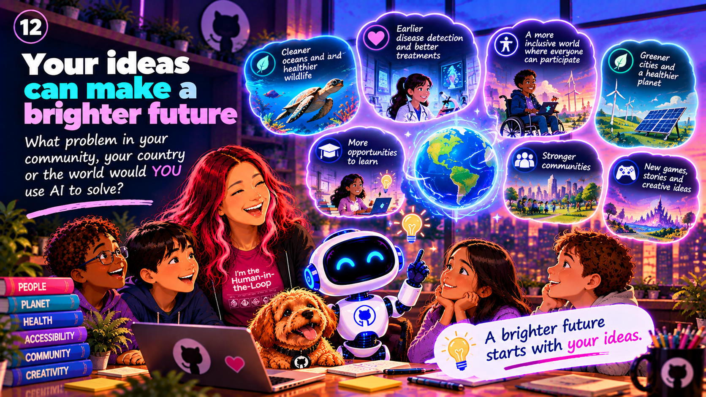

Chapter 17 / 17
Your ideas, a brighter future
The next chapter of AI belongs to people who are curious, creative, and willing to care about others.
Imagine a better tool
Begin with a problem you understand. Ask who needs help, then think about whether technology could make a useful difference.
Share and listen
Tell someone your idea and invite questions. Their perspective might help you make it safer, fairer, and more useful.
Eli designs a garden helper
Eli's school garden kept getting too dry during sunny weeks. He imagined an AI helper that could suggest when to water. His friend pointed out that different plants need different amounts, and the garden club knew which beds had new seedlings.
Eli drew a tool that offered suggestions but let the gardeners decide. They would check the soil before watering. He learned that a thoughtful idea starts with listening, and that people should stay in charge of tools that affect their community.
A real-life example
A music app may suggest a new song based on patterns in what you play. You can keep the suggestion, skip it, or choose something completely different.
Sketch your own helpful idea
- Name one small problem you care about.
- Draw a tool that could offer help.
- Mark where a person should check or decide.
- Show your sketch to someone and ask what you may have missed.